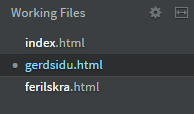
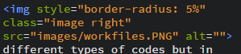

Creating a
website
First assignment of the semester.

First assignment of the semester was to create a website using HTML, so the first step was to educate myself on the functions that HTML offered. The following links offered alot of help for the proggression of the assignment were W3school and youtube. After I had educated myself with the functionality of HTML it was time to set everything up. The programs that are used for this assignment are Brackets, Git and Github. After everything was ready it was time to decide on the design of the page and HTML5 UP
gave me the option to get codes
for designs. I tried diffrent types of designs but most of them weren't working for me because of the

different types of codes but in the end I decided on the design MASSIVELY because of it's
simplicity. The first problem I encountered was creating the menu bar, where i wanted to have a dropdown for my assignment but I decided on just having them on the front page where people can view and see the content by clicking on them. For now I am only working with 3 different files for coding but they will increase as more assignments will be added on this site as the semester will progress
It took some time to understand the diffrents styles that HTML offered but by trial and error I manged to understand the basics, for example how to round

pictures and align text. This came in handy because it allowed me to edit pictures and text so that I could be happy with the look and design of the website. And just for the fun of it I decided to link my social for Facebook, Instagram and Github in the footer and nav bar of the website, just click it and you can view my social accounts.
I used Gestur's website as inspiration for creating my work, despite not using the same theme as him for the design I still often visited his site to get a better look for how the website should look like. At first I thought the assignment was just some personal page with some fun facts about me but after I checked Gestur's site I realised that the assignment was about creating a space to keep track of my assignments over the semester and thankfully I realised this before I put much work into the setup of the page.
Now that everything has been set and styled how I liked it, the next step in the progress was to use Git and Github. Using Git bash proved to be difficult and just overall didn't work because of some unknown error, so instead I used Github Desktop to transfer my files. For me this was the best choice because I already had some experience with Github Desktop and overall made the process much smoother for this assignment and hopefully future assignments.
The following is the sequence that were made to upload the website
- Create repository on the Github on the website (make sure that it is public).
- Clone the repository on Github Desktop.
- Transfer Brackets files into the repository on your desktop that mirrors the one you created on the website.
- Commit to master.
- Push Origin.
- On the Github website go to your repository.
- Go to settings.
- Scroll down till you see Github Pages.
- Select Brancch as master and file as /(root).
- Press save.
- You should now have a link to your working website.
Lets say that everything is done and you notice a typo or want to add a project on the site, then in stead of taking all the steps above you just repeat steps 4 and 5, thats why Github desktop is so useful. Hopefully this tutorial was to your satisfaction and informed you in one way or another.